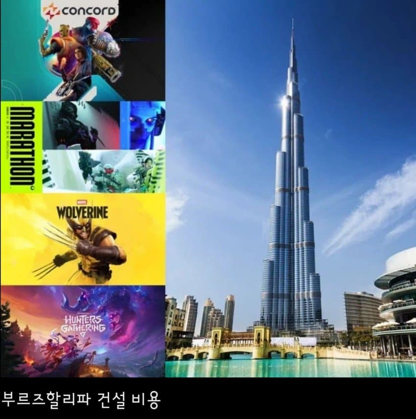
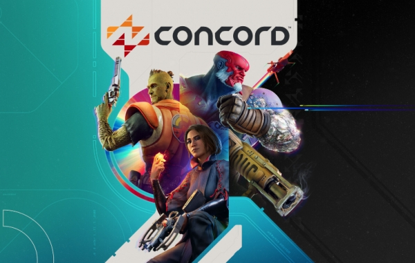
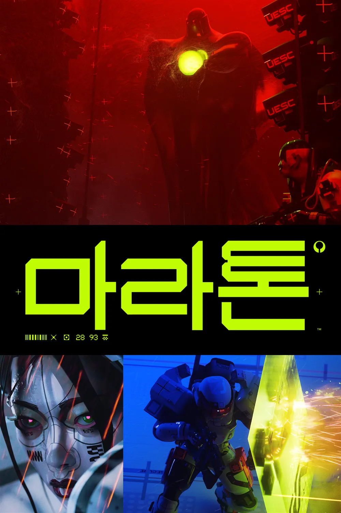
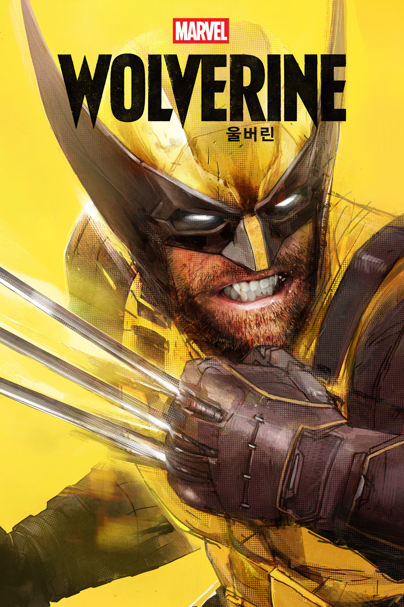
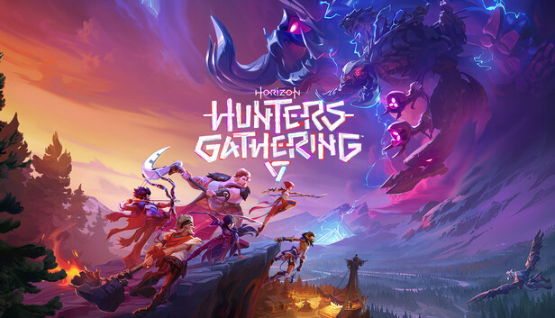
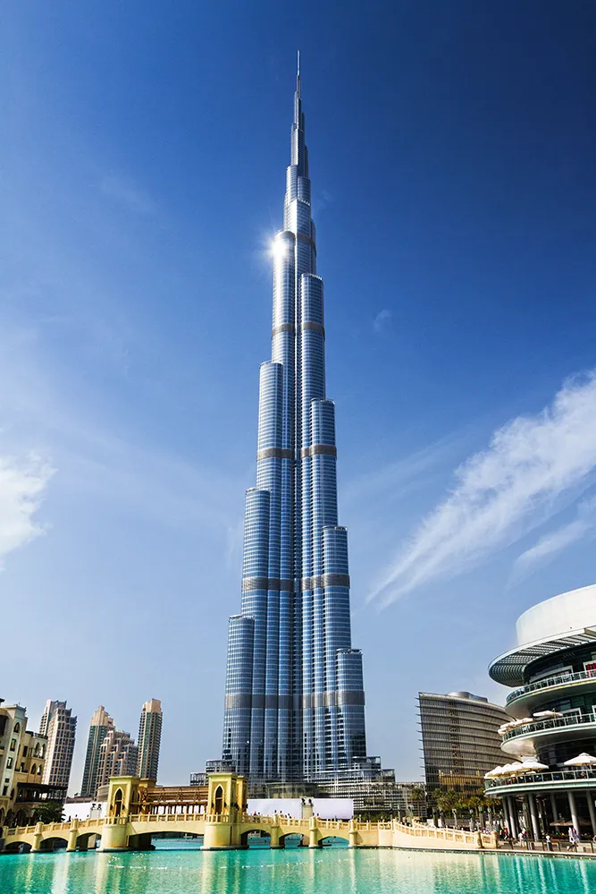

콘코드 4억달러 (5,400억원)

마라톤 2억 5천만달러 (3,700억원)

울버린 3억달러 (4,100억원)

호라이즌 헌터스 개더링[개발중] 2억달러(2,700억원)

브루즈 칼리파 건설비용 15억달러(2조원)
인터넷 4대 좆망겜 개발 비용이 브루즈 칼리파 건설비용에 근접함 ㅋㅋ


콘코드 4억달러 (5,400억원)

마라톤 2억 5천만달러 (3,700억원)

울버린 3억달러 (4,100억원)

호라이즌 헌터스 개더링[개발중] 2억달러(2,700억원)

브루즈 칼리파 건설비용 15억달러(2조원)
인터넷 4대 좆망겜 개발 비용이 브루즈 칼리파 건설비용에 근접함 ㅋㅋ
마라톤이 콘코드랑 비빌급으로 좆망했냐 저새끼들 데스티니 접고 저기 박은거 아니었나
동접 1500명임
번지년들 자살시급한수준임 ㅇㅇ
투입된 개발비 이외에도 번지 인수에 4조를 쏟았는데 ㅋㅋ 번지 거의 해체 수준이니 4조도 추가로 날렸다고 봐야지
마라톤은 그래도 게임성 있어 ㅠㅠ
게임성이 있었으면 안망했겠지요..
님도 그냥 얼마 없는 한줌단 중 한 명이었을뿐임
따흐흑
소니 병신들
그래도 게임산업이 가장 밀도있게 매출 내는 산업임. 양적인건 미디어 컨텐츠가 우위지만
호라이즌 제로던은 갓겜이었는데
Pc랍시고 깝치면 안된다
아작도 못배웠나
번지에 혹시 소니 경영진들의 비밀 야스비디오 갖고있는새끼 있는거 아니야?
좆망겜으로 잊혀진 하이가드도 있어
브루즈 칼리파 왤캐 싸게 느껴지냐 ㅋㅋㅋㅋ
울버린 리뷰보고오니까 심각하긴하네